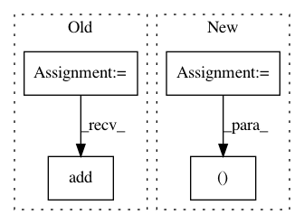

28b8b9d39f53d8327dbf658048a81b7046ae398f,magpie/nn/models.py,,cnn,#,19
Before Change
conv_layers = []
for ngram_length in NGRAM_LENGTHS:
ngram_layer = Sequential()
ngram_layer.add(Convolution1D(
NB_FILTER,
ngram_length,
input_dim=embedding_size,
input_length=SAMPLE_LENGTH,
init="lecun_uniform",
activation="tanh",
))
pool_length = SAMPLE_LENGTH - ngram_length + 1
ngram_layer.add(MaxPooling1D(pool_length=pool_length))
conv_layers.append(ngram_layer)
After Change
NB_FILTER = 256
NGRAM_LENGTHS = [1, 2, 3, 4, 5]
conv_layers, inputs = [], []
for ngram_length in NGRAM_LENGTHS:
current_input = Input(shape=(SAMPLE_LENGTH, embedding_size))
In pattern: SUPERPATTERN
Frequency: 3
Non-data size: 4
Instances
Project Name: inspirehep/magpie
Commit Name: 28b8b9d39f53d8327dbf658048a81b7046ae398f
Time: 2017-10-08
Author: stypka@spotify.com
File Name: magpie/nn/models.py
Class Name:
Method Name: cnn
Project Name: danielegrattarola/keras-gat
Commit Name: 9d56361641a64ff73ac630812ecd4964eedbc7aa
Time: 2017-11-09
Author: daniele.grattarola@gmail.com
File Name: gat/main.py
Class Name:
Method Name:
Project Name: IDSIA/sacred
Commit Name: 443e179cfaf8f5502002fbd8e480685d2991eade
Time: 2017-09-14
Author: qwlouse@gmail.com
File Name: sacred/initialize.py
Class Name:
Method Name: create_run